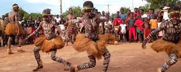

LA COTE D IVOIRE
La Côte d'Ivoire, officiellement République de Côte d'Ivoire (RCI), est un État situé en Afrique, dans la partie occidentale du golfe de Guinée. Elle présente sensiblement la forme d'un carré d'environ 600 kilomètres de côté5. D’une superficie de 322 462 km2, elle est bordée au nord-ouest par le Mali, au nord-est par le Burkina Faso,à l'est par le Ghana, au sud-ouest par le Liberia, à l'ouest-nord-ouest par la Guinée et au sud par l’océan Atlantique. La population est estimée à 28 088 455 habitants en 20211. La Côte d'Ivoire a pour capitale politique et administrative Yamoussoukro mais la quasi-totalité des institutions se trouvent à Abidjan, son principal centre économique. Sa langue officielle est le français, mais quelques 70 langues et dialectes6 sont parlés au quotidien. Sa monnaie est le franc CFA. Le pays fait partie de la CEDEAO, de l'Union africaine et de l'Organisation de la coopération islamique. D'abord protectorat français7 en 1843 puis colonie française le 10 mars 1893, le pays acquiert son indépendance le 7 août 1960, sous la houlette de Félix Houphouët-Boigny, premier président de la République.

Le président actuel est SEM ALASSANE OUATTARA au pouvoir depuis le 6 mai 2011

les groupes ethnique en Cote d'Ivoire De par son histoire, la Côte d’Ivoire est riche en patrimoine culturel. Elle compte à elle-seule une soixantaine d’ethnies, soit une soixantaine d’ensembles de personnes liées par un héritage socioculturel (langues, religions, traditions). On peut les diviser en 4 grands ensembles ethniques et linguistiques : les Akan, les Gour, les Krou et les Mandé. Géographiquement, on retrouve les Akan dans le quart sud-est du pays, les Gour principalement au nord-est, les Krou dans le centre-sud et sud-ouest, et les Mandé dans le nord-ouest et centre-nord. Mais cela revient à simplifier cette mosaïque culturelle. Parmi cette soixantaine d’ethnies, on peut par exemple citer les Baoulé, Bété, Gouro, Dioula, etc. Vous l’aurez compris, la culture ivoirienne se découvre riche et variée ! pour en savoir plus


pour en savoir plus informations sur les ethnies